American Humane Website
Project type:
Duration:
Role:
Methods:
Usability Study & Recommendations
2021
UX Researcher/Designer
Stakeholder analysis / Heuristic evaluationw / Content inventory and audit / User research / Personas creation / User stories / Usability testing / Lo-fi Prototyping
American Humane Website
Usability Study & Recommendations
2021
UI.UX Designer
Overview
American Humane is a nonprofit organization and committed to ensuring the safety, welfare, and well-being of animals. This is a summative evaluation intended to improve user experience on the American Humane Website by identifying user needs and goals by conducting usability research.
Goals of the study
The purpose of this study is to deliver proposed solutions and accessible methods to increase user experience on:
Donation information-seeking process
Adoption information-seeking process
Financial information-seeking process
Process of the study
This study took apart into three different phases and the user data were collected along with each phase.
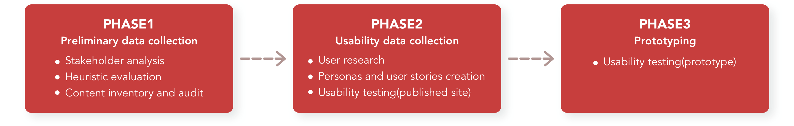
Stakeholder Analysis
With the purpose of assessing how the interests of stakeholders should be addressed in a project plan, policy, program, or other action, this research collects the related information on the Staff & Board page on the American Humane website. In the light of gleaning information about their attitude and needs, the role of the project owner, product designer, web developer, and author contribute a high impact toward the project. Hence, their needs and goals should be prioritized.
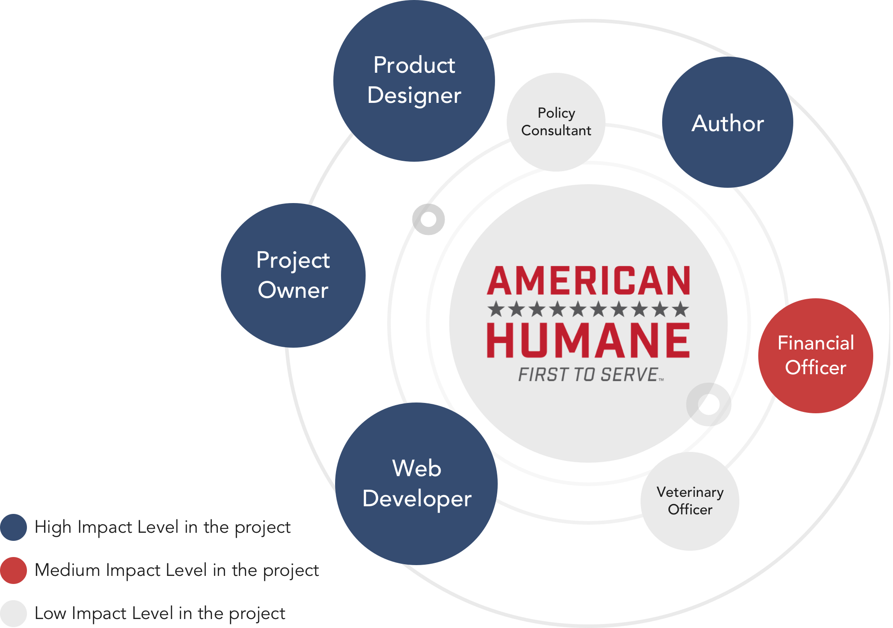
Heuristic Evaluation
To assess the usability of the American Humane website, a heuristic evaluation was conducted to measure usability of user interface and go through a checklist of criteria to find flaws. The major issues were identified as following:
Lack system status on pages.
Meaning of the words is unclear for users.
Some pages is too long to control and read on the mobile version.
The interaction is inconsistent when clicking contents with same design pattern.
Article pages are inconsistently labeled. Many articles place tags but some did not.
Did not give an instruction when people get into a error page.
Content Inventory and Audit
A list of content inventory and audit was established before conducting user research.
This list help to oversee every piece of digital content in the study scope on the website.
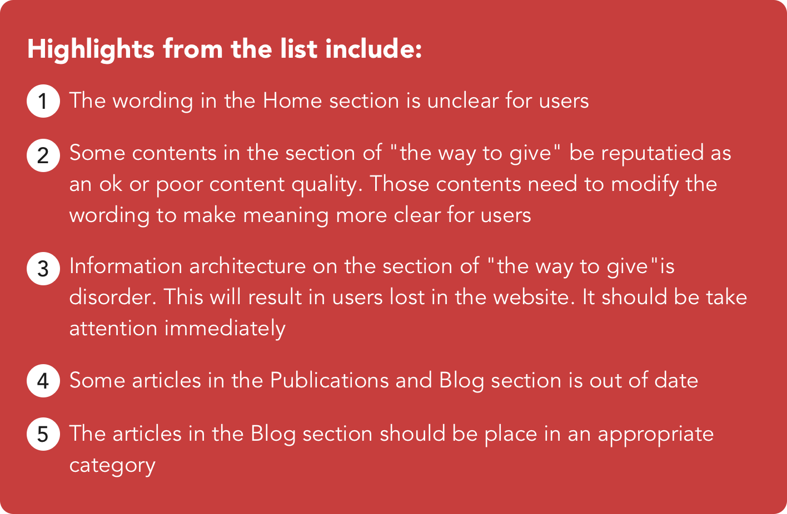
User Research
With the purpose of discovering demographics and psychographics of current or potential users of the site, the survey was conducted from September 12 to 16. Demographics and psychographic highlights for 5 respondents include:
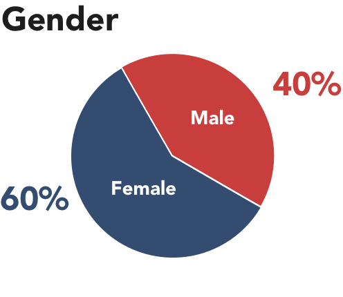
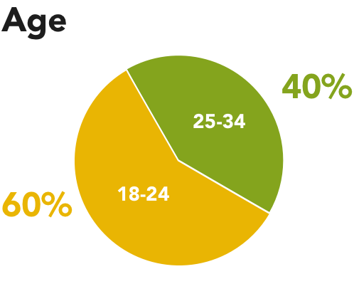
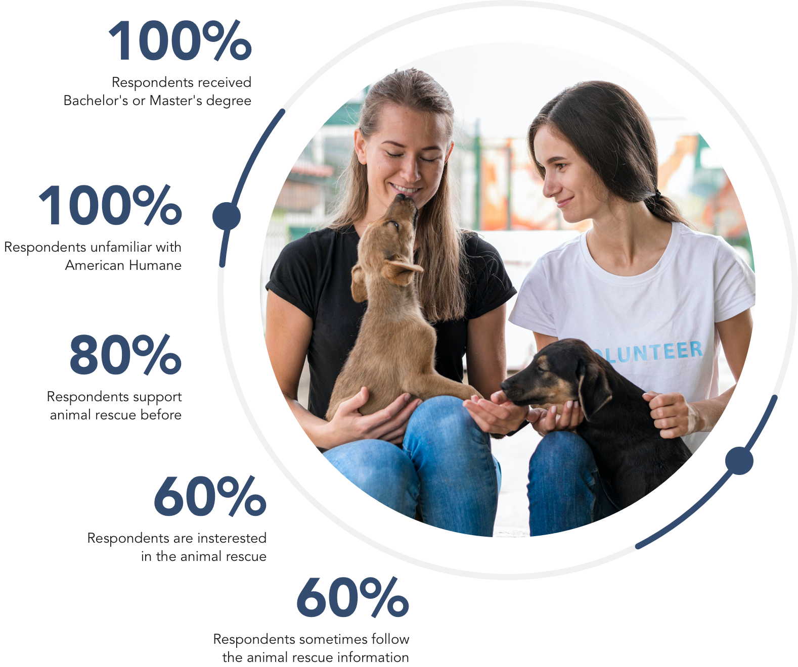
Personas and User Stories Creation
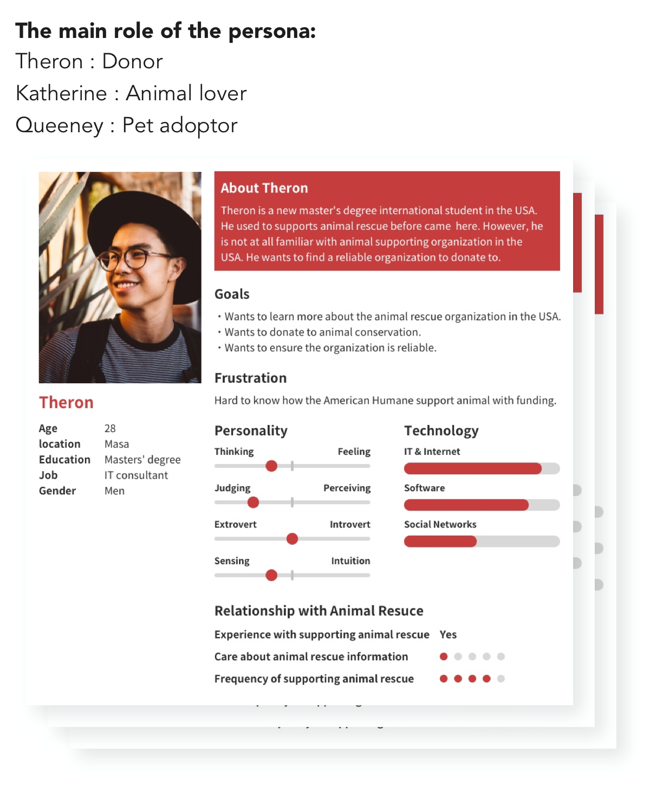
As a report by the user research, three personas were built to demonstrate users's characteristics, expectation, goals of the American Humane website. The picture shows an example of one persona that was created.
Usability Testing Materials
To conduct the useability test on the published site smoothly and keep the testing process in order, the following materials were developed.
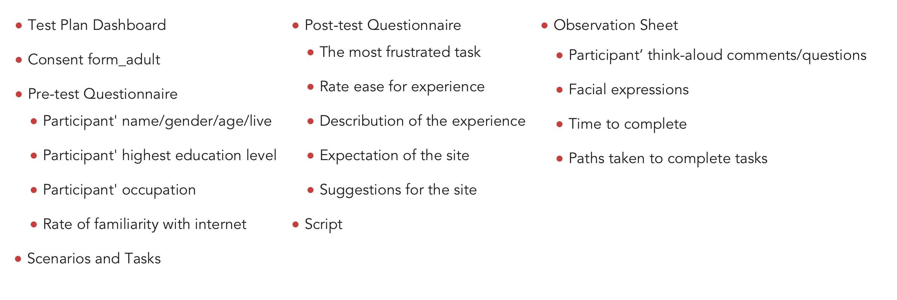
Usability Testing (Published Site)
Representative participants of the users of the American Humane website were recruited from the researcher personal networks. These sessions were conducted in-person at ASU poly campus. Participants take approximately 1 hour to complete whole testing session.
Goal of Usability Testing
With the view of the previous data, the following questions should be observed in the usability test :
- Do people know where can find the program page?
- What kind of animal rescue article people are interested in?
- Do people know where can find privacy policy information?
- Do people know where can make a donation?
- Do people know where can find the dog/cat adoption information?
- Do people know links for articles that are clickable?
- Do people know the banner of adoption shelter is clickable?
- Do people know where can find financial information?
- Do people understand the IRS Form 990 is about the tax information?
Major Result
Overall, in the usability research, all participants consider some words on the menu and contents are hard to navigate and understand. Furthermore, participants were unable or take time to find information by accessing banners.
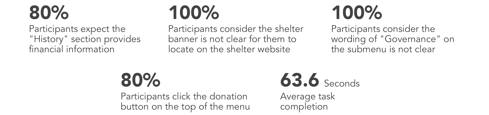
Prototype Creation
A medium-fidelity prototype for a redesigned American Humane website was created with key interactivity using Figma. The prototype includes elements such as text, pictures, or form. All pages were designed with a cohesive layout. Hence, it makes users easier to navigate to their target. The pivotal point is that participants can go through all tasks of scenarios with this prototype.
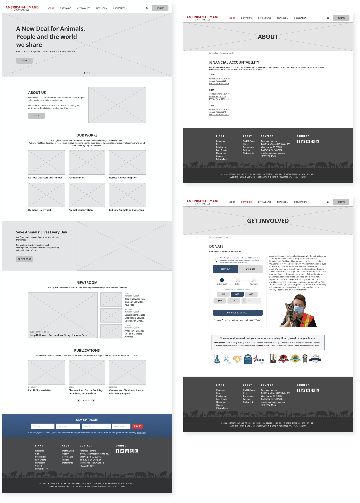
Prototype Testing Result
For the sake of resolving the issues identified in phase one, the prototype was created with proposed solutions and went through usability testing again. The proposed solutions have a significant effect to increase overall user satisfaction. First of all, participant average task completion time was at least 50% decreased in the prototype testing. Moreover, participants were able to achieve tasks in all scenarios.
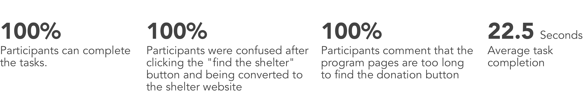
Recommendations
Modify information architecture
It would be recommended to add the item of“Animal Adoption” to the menu due to participants cannot locate information about dog/cat adoption. In the prototype version, this solution allows participants able to locate the adoption information directly through the menu. Even though the average time completion from prototype testing was the same as published site testing, participants did not enter the irrelevant page.
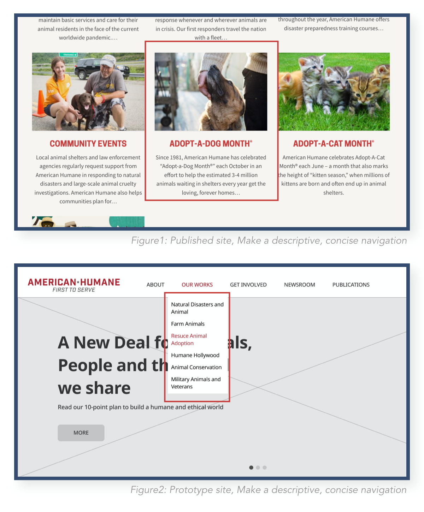
Separate the button and banner
According to the result from task 4 in the published site testing, participants spend 45 seconds finding the donation banner. Moreover, there was 1 participant cannot complete the task. Therefore, this issue was recorded as a blocker Issue, which means it impacts users' goals seriously. In the prototype test, the issue was fixed by separating the button and banner into two sides. This makes the button clear and not be influenced by a fancy background. This solution is also executable to task 5. The average time to complete the task has 67% improvement.
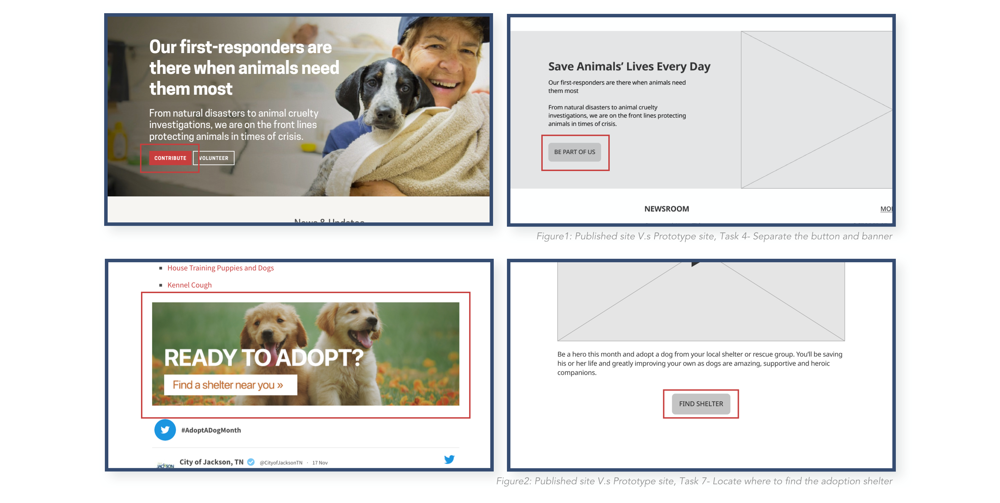
Make a descriptive, concise navigation
Since participants cannot locate tax and financial information, it would be recommended to place descriptive, concise navigation for solving those issues. For example, in the published site testing, 2 out of 5 participants cannot locate the tax form. The average task completion time is 120 seconds. These phenomena are attributed to the unfamiliarity of the wording of "Government" on the navigation bar. In the prototype version, the wording had been modified to “Financial Accountability”. As a result 92% improvement on average time to complete the task. Thus, it is recommended to simplify the navigation for users targeting key user goals identified in the study.
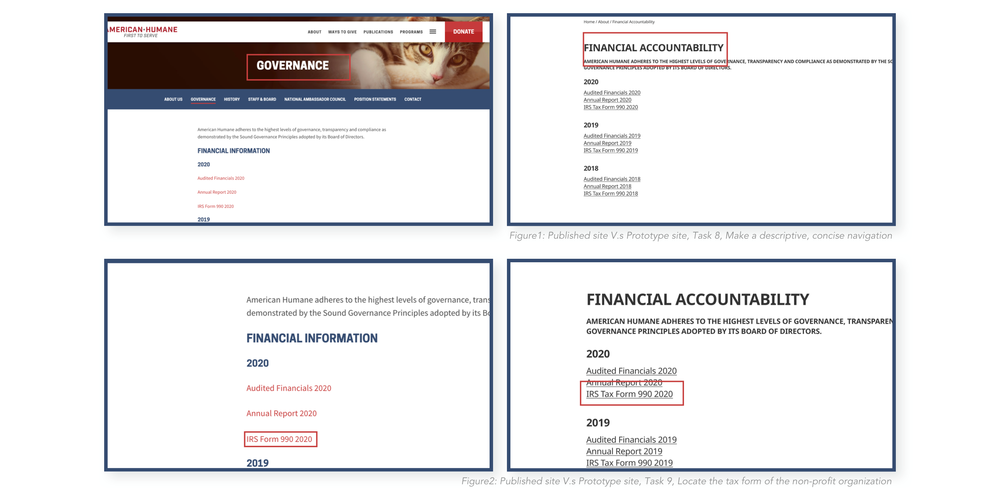
Make the design of the donation page consistent
According to the comment from 3 participants, there are two different donation forms on the published site which makes them confused. Moreover, this issue is not only pointed out by participants but also a result from the Heuristic Evaluation research. Hence, in the prototype version, this issue was fixed by creating a consistent design pattern.
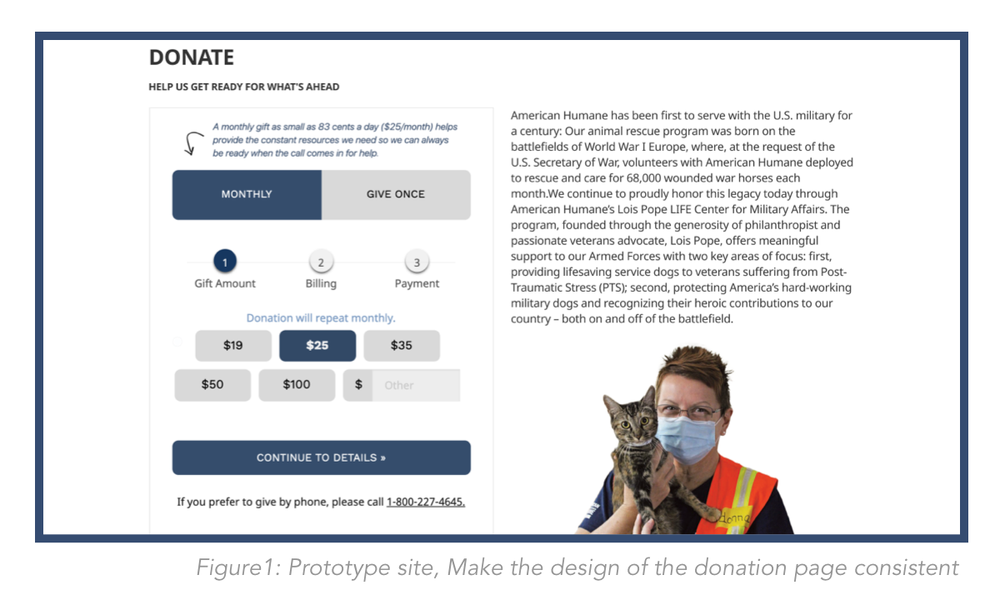
Create a design guide for the website
Participants comment that the font size on the site is hard to read. This issue might be a reason for them enter to irrelevant pages when taking tasks. Therefore design guides for the font-size were created as follows:
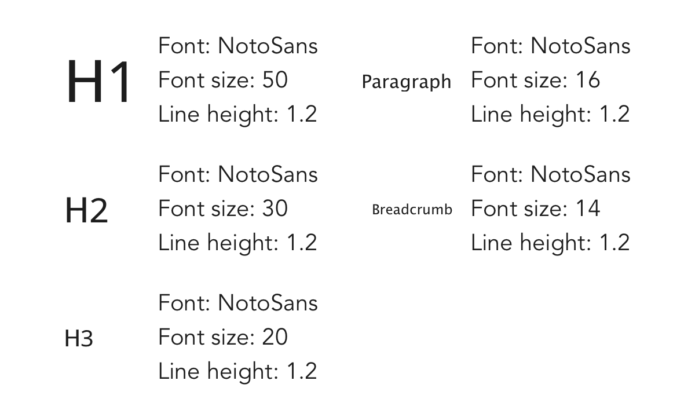
Next Steps
Overall, this study aimed to ameliorate user experience by conducting quantitative, qualitative, and usability research. The result from the phase of preliminary data collection provides a first glance at the American Humane website. After conducting the published site usability testing, can conclude the major issues of the site are caused by unclear wording on navigation, content, or title. Furthermore, the buttons on banners are not obvious and make users ignore them or spend a lot of time to find them. Fortunately, solutions carry out with prototypes solve those issues. They are:
- Modify information architecture
- Separate the button and banner
- Make a descriptive, concise navigation
Additional considerations for improving usability?
The solutions provided on previous pages can resolve major issues that impact users seriously. However, 2 out of 5 participants comment that pictures and their content title are unrelated on the animal rescue page when doing task 1. This issue was not tested in the prototype testing since user flow on the site needs to be improved before conducting visual design. Once the user flow is ameliorated, can observe this issue again. Perhaps the issue does not come from visual design problems. It could be caused by something else.